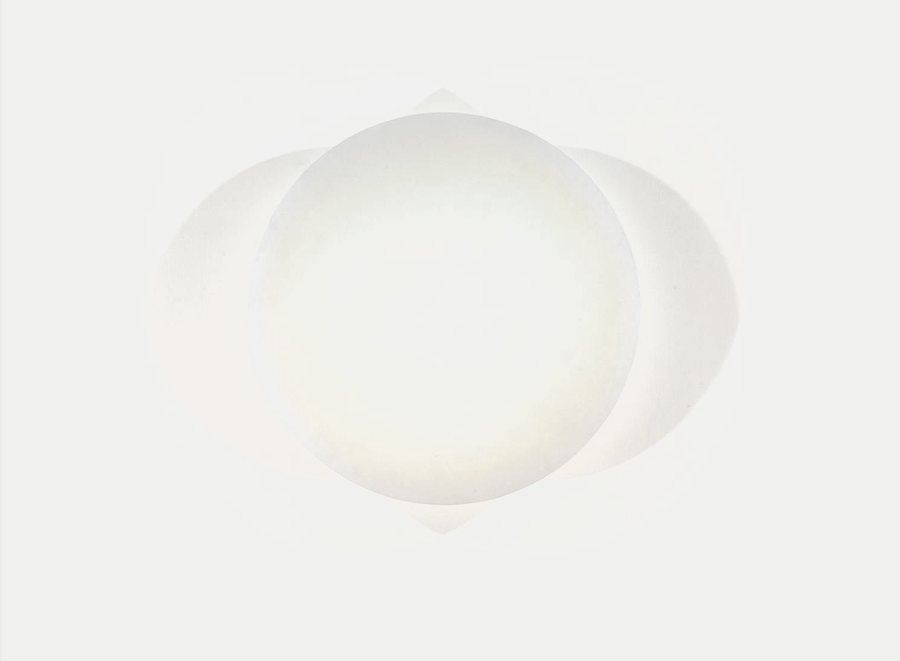
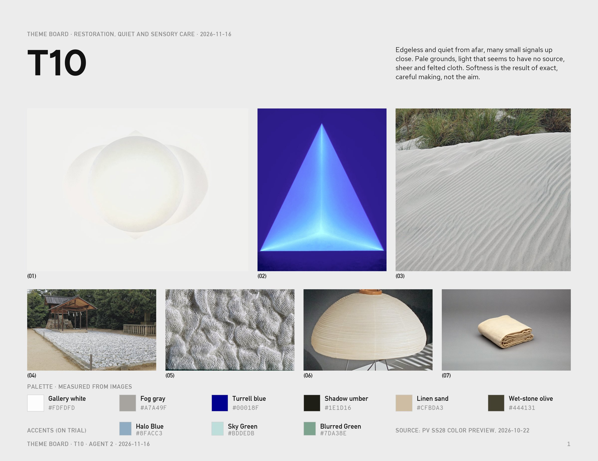

Theme T10 · Selected
Restoration, quiet and sensory care
T10 is more human-centric, visceral, and focused on the primitive nature of human perception. Like Lippard said, a slick surface takes longer to read. The Owner's interpretation: there is no haptics and no familiarity, so there is nothing to read from, and the perceiver must invent with imagination what is there that cannot be felt.



Overall mood
Edgeless and quiet from afar, many small signals up close. Pale grounds, light that seems to have no source, sheer and felted cloth. Softness is the result of exact, careful making, not the aim.


Definition and test
Owner's definition (2026-11-11, lightly cleaned). T10 is more human-centric, visceral and focused on the primitive nature of human perception. Edgeless and seamless are the result of having something much greater than us as the subject, a question of scale. A surface with no texture does not produce the noise or the haptics, even when scaled up.
The test. "Soft but with presence." Seamless and edgeless surfaces and light that read as limitless from afar and reveal complex, multi-signal haptics (value shifts, grain) up close.
Three ingredients (Agent 7 reading, to confirm with the Owner). (1) a subject far larger than the viewer; (2) texture or value noise the senses can read at close range; (3) no edge, frame or vantage point. A large flat gloss fails on (2), a small textured thing on (1), a view from a summit on (3).
Care test (Owner, addendum). An asset passes only if the material care or method shows (exactitude, waste avoided, precise handling, detail that rewards a close look). It fails if it only looks soft; when unsure it is tagged T10? with the reason.
Visual themes
01 Light without a source. Key motifs: a pale disc with no edge, a plane of colored light, a glow through paper. Sub motifs: soft round shadow, value shift instead of hue shift. Images (01), (02), (06).
02 Edgeless ground. Key motifs: ripples, gravel, an even floor that runs out of the frame. Sub motifs: fine repeated grain, no marks or paths. Images (03), (04).
03 Cloth that diffuses. Key motifs: sheer, felted and gauze cloth, fold lines. Sub motifs: layered fibers, semi-transparency. Images (05), (07).
04 Presence up close. Key motifs: surface grain, fiber, seam of a fold. Sub motifs: value shifts that only the eye at close range finds. Images (05), (06), (07).
Hero material
Fact. Sheer and felted textiles carry the set: very sheer linen (07, Met, ca. 1491-1473 BCE) and nuno felt, wool over gauze (05, close view). Both diffuse light and show fiber up close.
Interpretation. The material that fits the test is a matte, low-chroma textile with layered fibers and soft light transmission. A finish that is uniform, glossy and screen-like is what T10 argues against. Later candidates stay hypotheses.
Visual elements
Photography. Even, overcast or diffused light; plain grounds; no horizon line used for a vantage point.
Type and graphics. Plain captions in the Style Guide faces; no loud graphics.
Layout habits. One idea per image row; large images with low contrast beside close-up detail.
Detail. Subtle value shifts, fine grain, a single fold line.
Against (what T10 replaces)
The slick surface with no haptic information and no familiarity, where the perceiver has nothing to read and must invent what it cannot feel: glossy, uniform, screen-like finishes, even enlarged.
The magisterial gaze. Summit, panorama and aerial vista (Boime): the possessing view from above. Not used as T10 assets.
Not T9. T9 is the trace of wear on the object. Boro, darning and kintsugi images sit in the Portfolio draft as Care; here they are flagged T10? and kept for T9 to claim. Calm is not enough to qualify.
Visual story
Read the board as a change of distance. From afar: a disc, a light, a plane of ground with no edge (01 to 04). Closer: gravel and ripples resolve into grain, a lantern into ribbing, cloth into fiber (05 to 07). The point of the sequence is that the same surface changes what it tells you as you approach.
Core group and notable works
Core group (Owner, 2026-11-11). Hiroshi Sugimoto, Uta Barth, Agnes Martin, Olafur Eliasson, James Turrell, Robert Irwin.
On this board. Irwin (01), Turrell (02), Sugimoto (04, the Go'o Shrine court), Noguchi's Akari (06) as a supporting design.
Not yet on a board. Barth, Martin and Eliasson: no cleared or collected image yet. Eliasson's Turner color experiments (2014) are the small work the Owner described; to confirm.
What we can learn
Specify finishes by what they let the hand and eye read at two distances, not by how soft they look. Choose value shifts over hue shifts and fine grain over flat gloss. State the intention first; the gap between intention and outcome is the measure.
Part 1: Restorer
T10 read against WGSN's Restorers: references, three material studies and the materials I would specify.
Working notes from the research vault
Raw notes as kept in the vault: sources, readings and open questions. Interpretations are marked; unverified items say so.
T9 versus T10 (Owner, Telegram, 2026-11-15)
T10 focuses on emotions and senses: how one feels and how to activate that feeling. T9 focuses on the materialization of wear and tear and what it says about time and space (see T9). Agent 7's earlier table said T9 "documents the trace" and T10 "designs the felt state"; the Owner's wording above supersedes it.
Owner decisions, 2026-11-16 (after the Premiere Vision SS28 theme fit)
- Pale hue is added as an accent. The Owner: "we can change later, the theme moodboard is a living organism, it expands and contract, like a garden we tend to." So a pale cool hue (the SS28 preview's Halo Blue, Sky Green, Blurred Green) sits inside T10 as an accent on trial. It does not change the test, the three ingredients or the care test. Review it at each season variation.
- Phygital. The Owner's term to note: physical plus digital, get the best of both. (Agent 7, interpretation, to confirm: "digital-inspired" color is therefore not on T10's against side by itself. What T10 opposes is the surface with nothing to read. A clear, screen-born color can pass if texture and value shift are readable at close range. This also bears on the open Murakami question.)
- Five-year forecast. The Owner: "We are forecasting up to 5 years from now, we will miss something, we might hit jackpot, nobody knows. the story must be good, background research must make sense and align well with the theme." (Agent 7, interpretation: a trend source such as the AW 27-28 swatches is used for a season variation only where the theme's story supports it; the story is the reference, not the swatches.)
- How these are applied across all themes: Theme Framework (draft, awaiting the Owner).
Idea (my first reading; calm confirmed by the Owner, the title stands)
Design judged by the state it leaves the user in: calm, steadied, attentive. Touch, softened light, blurred finishes and slowness are the means; care and repair are how the object is used over time. It differs from T9 (the visible trace of wear) by naming the intended user state, and from T6 (land art and place) by being about the senses, not the landscape. Overlap with T9 and T3 is large.
References
- Liliana Becerra (Studio Liliana Becerra Inc.), Editorial page: https://www.lilianabecerra.net/editorial (accessed 2026-11-11; page undated).
- Soft Design: Aesthetic Experience at the Intersection of Materials, Technology and Interaction (Routledge, 2025, per the studio page). Described as an emerging design language of emotional aesthetics combining emotive and sensory design with old and new technology. Topics listed include biodesign, thermal comfort, spatial materiality, responsive architecture, soundscapes, digital materiality and AI. Advocates wellbeing, neuroinclusivity and synchrony with nature. Interviews with Lachlan Turczan, Tarun Raj and Mario Carrillo.
- CMF Design: The Fundamental Principles of Color, Material & Finish Design (Frame Publishers, first published 2016; the page says 3 editions sold out). Color, material and finish specified for functional and emotional attributes.
- Status: only the studio's own page was read; neither book was opened. Claims above are the studio's description, not checked.
- WGSN FC28 The Restorers, Interiors (p15) and Strategies (p8): see
Library/PDF Library/WGSN - The Restorers, Source Pack (2026).pdfand the WGSN report in_Inbox/.
Becerra's idea in short (read 2026-11-11; publisher and studio pages, not the book)
- Fact (Routledge page, studio pages): "soft" is a design language of emotional aesthetics. It joins emotive and sensory design with old and new technology, and ties the tangible and intangible sides of aesthetic experience to scientific research (neuroaesthetics). The book is organized in three realms: physical, hybrid, digital. Case studies include IOUS Studio, Pangaia, Carbon, OPUS, FIELD.IO and Dumo Lab; interviews with Lachlan Turczan, Tarun Raj and Mario Carrillo. Routledge lists 186 pages, 78 color illustrations, published 7 Nov 2025 (https://www.routledge.com/Soft-Design-Aesthetic-Experience-at-the-Intersection-of-Materials-Technology--Interaction/Becerra/p/book/9781032958545).
- Fact (a Routledge review quote, Reviewer's words): the book sets soft surfaces, digital craft and inclusive solutions against sharp edges and mass-produced sameness, and links multisensory care to wellbeing.
- Fact (Voyage LA interview, undated): her studio (opened 2008, Los Angeles, after seven years at Nokia Design) works on "soft values cues": almost imperceptible cues behind a product that are translated into form, look and feel, and perceived value. CMF Design (Frame, 2016) is the practical side: color, material and finish specified for functional and emotional attributes. https://voyagela.com/interview/meet-liliana-becerra-studio-liliana-becerra-inc-inc-part-name-downtown-los-angeles/
- Fact: Eames Institute Curious 100, 2026 honoree (https://www.eamesinstitute.org/curious-100/2026/).
- Interpretation (mine): her "soft" is a method (translate intangible values into touchable cues), not only a look. That is why it suits a CMF portfolio and differs from T9: T9 reads the trace left by time on the object; Becerra designs the felt state in advance. The tension to watch: WGSN's Restorers language and Becerra's "emotive design" are both commercial vocabularies; T10 needs artists and designers who show the sensory state without selling it.
Already in our library (Theoretical Research log; interpretation, entries are mostly "Why: to confirm")
- Light and quiet: Isamu Noguchi (Akari lamps are already an Instagram input), Ad Reinhardt, Mark Rothko, Morandi, Uta Barth (blur and soft focus; to confirm), Wolfgang Tillmans (light; weak fit).
- Touch, textile and soft material: Jack Lenor Larsen, Suzanne Tick, Jhane Barnes, The sculpture of Ruth asawa, Issey Miyake, A-POC, Josef Albers (color perception), Eva Hesse (also T9).
- Nature, sense and slowness: Walden, Andy Goldsworthy (also T6, T9), Tomas Saraceno, Bruno Munari, Werner Aisslinger (biomaterials; to confirm), Marco Maggi, Yuken Teruya.
- Overlap with T9 to keep apart: Eva Hesse, Goldsworthy, Joseph Cornell, Morandi can sit in both; place them by what the work does, wear and trace (T9) or calming the senses (T10).
Added to the library for T10 (2026-11-11, by Hermes; each has a `check` flag, facts unverified)
Liliana Becerra, Anni Albers, Sheila Hicks, Kenya Hara, Olafur Eliasson, James Turrell, Peter Zumthor, Juhani Pallasmaa, Agnes Martin, Hella Jongerius, Sabine Marcelis, Naoto Fukasawa, Kengo Kuma, Hiroshi Sugimoto (Owner request), Robert Irwin (Owner request), Takashi Murakami (Owner request), In Praise of Shadows (Tanizaki; also a T9 suggestion). Sorted by role: theory base (Pallasmaa, Tanizaki, Becerra); textile and touch (Anni Albers, Hicks); light and atmosphere (Turrell, Eliasson, Marcelis, Zumthor, Sugimoto); quiet and emptiness (Agnes Martin, Hara, Fukasawa, Kuma); color and material (Jongerius).
Owner's moodboard brief (2026-11-11, Telegram; his words, lightly cleaned, kept as his reading)
The small Eliasson work. Eliasson made small works alongside his large installations: studies of old paintings, with the colors extracted and laid out on a circle. Seamless, near perfect, so perfect that it is soft. (Agent 7 identified this as the Turner color experiments, 2014, Tate Britain: Eliasson analyzed seven Turner paintings and made a circular color spectrum from each, oil on canvas. Source: https://olafureliasson.net/exhibition/turner-color-experiments-2014 and Aesthetica, https://aestheticamagazine.com/olafur-eliasson-expanding-environments-aesthetica-magazine/. Dates differ between sources; not stated here. Owner to confirm this is the work he means.)
The pattern across the group (Sugimoto, Barth, Martin, Irwin, Turrell, Eliasson). - Masterly values that imply texture. The value shift is extremely subtle but visible, as if a real light beam were diffusing. - Edgeless, as if limitless: a great enabler, no boundary. The boundary only exists up close, in macro view, where you notice texture you cannot quite figure out by seeing alone. - Delicate but with presence. Touch is complex: the haptics send several signals, not one uniform slick surface. Photo grain works the same way. - Takashi Murakami: many paintings made so masterfully that they read one way from afar and astonish up close. - Owner, 2026-11-11: his work is Superflat, but the execution is so meticulous that detail compensates for the lack of touch, where touching is not allowed; all senses go to seeing. This differs from flat by absence (cheap packaging paper printed flat in spot color). Open: is this inside the "soft but with presence" test, or an exception to it (flat, untouchable, detail stands in for touch)? - The ultimate is light used directly in the work. Nothing beats it; we only imitate nature.
The argument. Materials that make us realize the beauty of nature can remind us to re-establish, or find a new way of, connecting with nature, and that takes vision. We have been living with the Sublime. Something needs to overthrow our fetishism so human-to-human communication can develop; inter-human connection can be as complex as it likes while ignoring what can be done outside it, or beyond it. The best way to make us realize is a visionary image and a sensory invitation to the rematerialization of our art and life.
Agent 7 notes (interpretation). - This links T10 to T3 (rematerialization; the Owner's priority) and T6 (place and nature). T10 is the sensory route into T3: rematerialization through touch and light, not through the object's trace (T9). - Design reading for Agent 2 and the CMF work: surfaces that read smooth from a distance and complex in the hand; value shifts over hue shifts; no hard edges; fine grain over flat gloss. Use "soft but with presence" as the test. - The "overthrow fetishism" point is the Owner's own position, not from Becerra or WGSN. Treat it as the theme's editorial stance; keep posts experimental, not preachy. - To confirm: the Owner's "the Sublime" reference (the philosophical sense, e.g. Burke or Kant, or the Romantic landscape sense).
The sublime in question: the Magisterial Gaze (Owner's pointer, 2026-11-11)
Owner pointed to "majestic gaze" in our library: Albert Boime, The Magisterial Gaze: Manifest Destiny and American Landscape Painting c. 1830-1865 (Smithsonian Institution Press, 1991). In the PDF library as Boime - Monarch of All You Survey, in The Magisterial Gaze (1991).pdf: the closing section of the book, book pp. 136 to 158 (23 scanned pages, no text layer; I read it by OCR, which is not checked word for word, and not the rest of the book).
- Fact (Boime, as read): the "magisterial gaze" is the commanding, panoramic view from a height. Boime ties it to the surveyor: mapping, triangulation from high stations, the grid of longitude and latitude laid over the continent, and the Manifest Destiny the survey served. He says the gaze always projects the vision across the valley "a step ahead" of where the viewer stands, a dynamic of expansion from a "primitive" state to a "civilized" one. He quotes surveyors and promoters describing the western view in the language of the sublime ("the sublime panorama", Gilpin; "no element of sublimity is left out"), and links the vantage point to possession and the fixing of boundaries, and to the displacement of Native Americans. Landscape painters and survey photographers share this viewpoint. He ends with Mount Rushmore as the gaze turned to rock.
- Owner's reading (his stated sense of the sublime): "we have been living with the Sublime", and "something needs to overthrow our fetishism". Agent 7 interpretation of what he means: the possessing, from-above sublime (vista, summit, mastery, boundary) is what T10 turns away from.
- The contrast for T10 (interpretation, mine, to confirm with the Owner):
| Magisterial gaze | T10 works |
| vantage point above, looking out | immersion, no vantage point |
| line, boundary, grid, survey | edgeless, no boundary |
| seeing as possession | seeing as being in the light |
| panorama, scale as power | subtle value shift, close-up texture and haptic complexity |
| nature as stage for progress | nature as what we imitate and reconnect with |
Irwin's discs with dissolved edges, Turrell's light rooms, Eliasson's color circles, Sugimoto's horizons and Barth's blur all remove the surveyor's line and the commanding viewpoint. Note: Sugimoto's seascapes do use a horizon, a division of sea and sky, but without a human vantage point or a narrative; to discuss.
- Also in the library, and important per the Owner: sublime.pdf (22 pages, anthology excerpt, Nature and Technology sections, one yellow highlight by the Owner on Jameson's "Third Machine Age" passage). Read in full on 2026-11-11; notes in 2026-11-11 Sublime Anthology Reading Notes. Short version: the library holds three sublimes: the possessing one (Boime), the awe and boundlessness one (Burke, Kant, Rosenblum on Still, Rothko, Pollock, Newman) and the technological one (Lyotard, Gilbert-Rolfe, Jameson, Ascott). De Maria's Lightning Field and Eliasson's essay support T10 directly; Smithson is the counter-voice.
- Not read: the rest of Boime's book.
Primary sources now read for T10 (2026-11-11)
- 2026-11-11 Eliasson Irwin Take Your Time Reading Notes: the two core artists in conversation (2006). Irwin on edges ("there are no frames in our perception. It's a continuous envelope in which we move"), his 1970 MoMA fluorescent-light room, "light seemingly without a source", the viewer as producer, no ambition on the viewer's behalf. Strongest primary support for the "edgeless" test; Eliasson's caution: breaking the frame becomes a frame.
- 2026-11-11 Lippard Dematerialization Reading Notes: Lippard's term, her own caveat that it is imprecise, and the time-and-slowness argument about detail-less work. Two senses of "dematerialization": Lippard's (the object recedes for the idea) and Eliasson and Irwin's (the object dissolves into the viewer's perception). T10 uses the second.
Owner's added references (2026-11-11)
Clement Greenberg, Modernist Painting and Avant-Garde and Kitsch; Lucy Lippard, whose "The Dematerialization of the Art Object" the Owner calls critical (also T3); he has his own summary and interpretation of it in the library, which I could not find. Entries in the log; Lippard's two texts are now in the PDF library. The Owner has not yet said how Greenberg bears on T10; do not assume a reading. Greenberg's 'flatness' and 'kitsch' are in tension with the edgeless, soft-but-present test (to discuss).
Owner's core group (2026-11-11, Telegram)
Hiroshi Sugimoto, Uta Barth, Agnes Martin, Olafur Eliasson, James Turrell, and Robert Irwin (the "edgeless" painter; identified by the Owner). Owner's reading: Sugimoto puts a sense of time all in one frame. Use this group as the T10 starting set; the other names above are supporting.
Assets ready now (Library/Image Collection, tag [T10])
Robert Irwin images collected 2026-11-11. The files live in the Image Collection only; this list links to them (source, credit and license in Library/Image Collection/references/source-records.md). Private-use library; credits recorded.
- 2026-11-11 MOCA irwin-untitled-1965-67.jpg: Untitled (disc), 1965-1967.
- 2026-11-11 IMA irwin-untitled-1968-69.jpg: Untitled (disc), 1968-1969.
- 2026-11-11 Anderson irwin-untitled-1969.jpg: Untitled (disc), 1969.
- 2026-11-11 Apollo irwin-dot-painting-0174.jpg: Source file name IRWIN_DOT-PAINTING_0174; work to confirm, to confirm.
- 2026-11-11 Apollo irwin-excursus.jpg: Excursus: Homage to the Square³ (Dia:Beacon), 1998, reinstalled 2015.
- 2026-11-11 Apollo irwin-light-space-0374.jpg: Source file name IRWIN_LIGHT__SPACE_0374; work to confirm, to confirm.
- 2026-11-11 Apollo irwin-portrait.jpg: Portrait of the artist, 2015.
- 2026-11-11 Commons irwin-scrim-veil-whitney-2013.jpg: Scrim Veil, Black Rectangle, Natural Light, 1977 (installed Whitney 2013).
- 2026-11-11 Commons irwin-fluorescent-lacma.jpg: Light installation, LACMA, to confirm.
- 2026-11-11 Commons irwin-central-garden-getty.jpg: Central Garden, Getty Center, 1997.
Best fits for the "soft but with presence" and edgeless test: the discs (MOCA, IMA, Anderson; Anderson is low resolution), the Dia:Beacon scrim rooms, the Whitney scrim veil and the LACMA fluorescent wall. The Getty garden image is aerial and is kept only as a record of the work. Image sizes are unchecked against the letter-size, 72 ppi bar; most Apollo files are 800 px wide, so treat them as reference.
Collected by the Owner on 2026-11-11 as 2026-11-11 Norton Simon irwin-untitled-1968.png (screenshot of the museum viewer; Irwin, Untitled (1968), disc, Norton Simon Museum P.1969.132, to confirm). Earlier note: Irwin, Untitled (1968), disc, Norton Simon Museum P.1969.132 (the Owner's link: https://images.nortonsimon.org/iipsrv/iipsrv.fcgi?QLT=100&IIIF=P1969132.jpf/full/!668,1002/0/default.jpg). The museum's image server blocks automated downloads (Cloudflare check). The Owner can save it into Library/Image Collection/assets/ as 2026-11-11 Norton Simon irwin-untitled-1968.jpg; then add its index line and source record.
Connections (interpretation, unverified)
- Related themes: T9, T3, T6, T1.
- Links to the CMF work: sensory finish, softened gloss and tactile surface choices in the Portfolio's CMF boards.
To develop
- Owner to confirm the title and scope.
- Verify the facts in the new log entries and fill their "Why" lines as the Owner reads.
- Read Becerra's Soft Design itself if it can be accessed (only publisher and studio pages read so far).
- Agent 2: asset tagging and first posts (see the handoff note in its folder).
Open items at end of day, 2026-11-11
- Statement drafts 1 to 3 are in
_Inbox/(draft 3 is current, with a short version). Not yet moved toProjects/Studio Art/. - Murakami case (flat, meticulous, untouchable): inside the test or an exception? Open.
- Owner's own Lippard summary: still not found.
- Becerra's book, Sugimoto, Barth, Martin and Turrell primary sources: unread; 18 log entries from my own knowledge need checking.
- Agent 2 has the revised handoff with the care test; not messaged.
Decisions and to-do (Owner, 2026-11-11, end of day)
- Statement drafts moved to
Projects/Studio Art/references/. - Murakami: needs more analysis, then added to his log page.
- Owner's Lippard summary: dropped; do not search for it. Idea: a Lippard Instagram post if anything about her turns up in the news (watch item).
- To-do: primary-source reading. Search memory and the world for leads on each core artist and theorist (Sugimoto, Barth, Martin, Turrell, Becerra, Pallasmaa, Zumthor and others), then add a reading summary to each log page, replacing the
checkflag where verified.
Progress, 2026-11-12 (Agent 7)
- Primary-source reading done (partial) for Sugimoto, Barth, Agnes Martin, Turrell: 2026-11-12 T10 Core Artists Primary Source Reading Notes. Reading summaries added to their log pages;
checkflags reworded, not removed (sources partial). - Murakami analyzed: 2026-11-12 Murakami Superflat Reading Notes. Proposed verdict: counter-case with a shared virtue (exactitude), fails texture and edgeless tests. Owner to confirm.
- New tension to discuss: Martin's grid against the Owner's "soft = absence of the grid".
- Still open: Becerra, Pallasmaa, Zumthor and the other supporting names; the 18 own-knowledge log entries; Agent 2 not yet messaged.